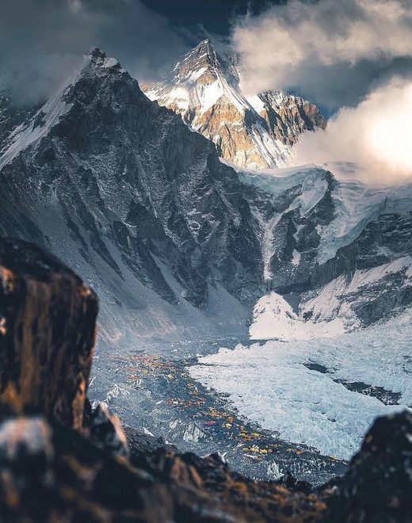
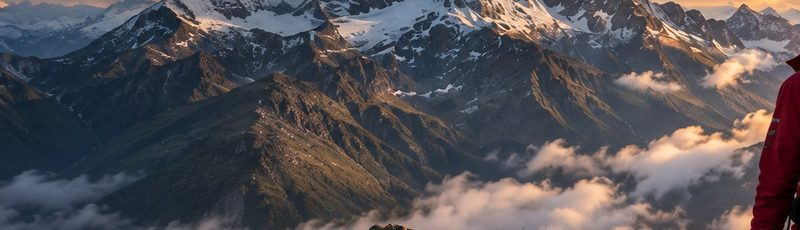

<!DOCTYPE html>
<html lang="en">
<head>
<meta charset="UTF-8" />
<meta name="viewport" content="width=device-width, initial-scale=1.0, viewport-fit=cover" />
<title>SummitReady — Expedition Basecamp</title>

<!--
  ════════════════════════════════════════════════════════════════════════════
  SUMMITREADY · EXPEDITION BASECAMP — high-fidelity visual prototype

  Sibling of summitready-training-basecamp-mockup.html. The mode switch picks
  the Basecamp mode (Training | Expeditions); the bottom navigation picks the
  app section — so BASECAMP is the active tab here, not Expeditions.

  Training mode reads in SummitReady green, Expeditions mode in SummitReady
  blue. Every other token — surfaces, type scale, spacing, icons, navigation —
  is shared with the other prototypes.

  ⚠ PROTECTED COMPONENT BOUNDARY: <ProgressMountainContainer>
  The mountain, route, markers and elevation scale below are a PROTOTYPE
  VISUAL STAND-IN so the whole Basecamp layout can be judged. In production
  this slot is filled by the EXISTING Progress Mountain component, with its
  own artwork, SVG route, progress maths and summit completion animation.
  Nothing here redefines that: the container only supplies position, size and
  the data contract { climbed, target, stages[], currentStage }.
  ════════════════════════════════════════════════════════════════════════════
-->

<script src="https://cdn.tailwindcss.com"></script>
<link rel="preconnect" href="https://fonts.googleapis.com">
<link rel="preconnect" href="https://fonts.gstatic.com" crossorigin>
<link href="https://fonts.googleapis.com/css2?family=Inter:wght@400;500;600;700;800&display=swap" rel="stylesheet">
<script>
  tailwind.config = { theme: { extend: {
    colors: { ink:'#05090B', accent:'#167DF7', train:'#24EFA4' },
    fontFamily: { sans:['Inter','system-ui','-apple-system','sans-serif'] },
  } } }
</script>
<style>
  :root { --ink:#05090B; --accent:#167DF7; --train:#24EFA4;
          --i1:rgba(255,255,255,.92); --i2:rgba(255,255,255,.62); --i3:rgba(255,255,255,.42); }
  html, body { margin:0; background:var(--ink); color-scheme:dark; }
  .no-sb { -ms-overflow-style:none; scrollbar-width:none; }
  .no-sb::-webkit-scrollbar { display:none; }
  .ph { background-color:#101c28; background-image:
        linear-gradient(165deg, rgba(22,125,247,.12), rgba(0,0,0,0) 48%),
        linear-gradient(to top, #070c0e 0%, #101c28 42%, #21405e 72%, #4d6d8e 100%); }
  .ph > img { opacity:0; transition:opacity .5s ease; }
  .ph > img.ok { opacity:1; }
  .glass     { background:rgba(255,255,255,.07); border:1px solid rgba(255,255,255,.13); backdrop-filter:blur(14px); }
  .navglass  { background:rgba(5,9,11,.94); backdrop-filter:blur(22px) saturate(140%); }
  .panel     { background:linear-gradient(158deg, rgba(18,30,44,.92) 0%, rgba(10,16,21,.94) 62%, rgba(8,12,16,.96) 100%);
               border:1px solid rgba(255,255,255,.075); }
  .panel-sub { background:rgba(255,255,255,.035); border:1px solid rgba(255,255,255,.07); }
  .pressable { transition:transform .12s ease, filter .12s ease; }
  .pressable:active { transform:scale(.975); filter:brightness(1.14); }
  .route-done { transition:stroke-dasharray 1.2s cubic-bezier(.22,1,.36,1); }
  .ring-arc   { transition:stroke-dasharray 1.1s cubic-bezier(.22,1,.36,1); }
  #sheet, #scrim, #toast { transition:opacity .28s ease, transform .3s cubic-bezier(.22,1,.36,1); }
  @media (prefers-reduced-motion: reduce) { * { transition:none !important; } }
  :focus-visible { outline:2px solid var(--accent); outline-offset:2px; border-radius:6px; }
  /* safe areas: the app runs edge to edge, its bars clear the system chrome */
  .safe-top { padding-top:calc(14px + env(safe-area-inset-top, 0px)); }
  .safe-bot { padding-bottom:env(safe-area-inset-bottom, 0px); }
</style>
</head>
<body class="font-sans text-white antialiased">

<div class="relative mx-auto w-full max-w-[430px] min-h-screen bg-ink overflow-x-hidden">
  <main id="screen"></main>
  <div class="h-[104px]"></div>

  <div class="fixed bottom-0 left-1/2 -translate-x-1/2 w-full max-w-[430px] navglass border-t border-white/[.07] z-30 safe-bot">
    <div id="tabs" class="flex items-start justify-around pt-[11px] pb-[13px]"></div>
  </div>

  <div id="scrim" style="opacity:0;pointer-events:none" class="fixed inset-0 z-40 bg-black/70 backdrop-blur-[2px]"></div>
  <div id="sheet" style="transform:translate(-50%,105%)" role="dialog" aria-modal="true" aria-label="Stage detail"
       class="fixed bottom-0 left-1/2 w-full max-w-[430px] z-50 max-h-[86vh] overflow-y-auto no-sb
              rounded-t-[22px] border-t border-white/10 px-[17px] pt-[14px] pb-[30px] safe-bot"></div>

  <div id="toast" style="opacity:0;transform:translate(-50%,8px)"
       class="pointer-events-none fixed left-1/2 bottom-[104px] z-[60]
              px-[15px] py-[9px] rounded-full glass text-[11.5px] font-semibold whitespace-nowrap"></div>
</div>

<script>
/* ═══════════════════════ EXPEDITION STATE ═══════════════════════
   Demonstration data for the prototype. It does not redefine the Elevation
   Bank, Mountain DNA or expedition persistence models.                       */
const EXPEDITION = {
  name:'Everest Simulation', tagline:'Real hills. A legendary goal.',
  climbed: 1420,            /* metres logged toward the expedition            */
  target:  4500,            /* expedition elevation target                     */
  weeks:   12,
  stages: [
    { n:1, name:'Blencathra', route:'Hallsfell Top', gain:602,  dna:96, img:'mockup-assets/ex-s1.jpg',
      note:'A steep, committing ridge with a true mountain feel — the closest local match to your first Everest section.' },
    { n:2, name:'Bowfell',    route:'The Band',      gain:529,  dna:88, img:'mockup-assets/ex-s2.jpg',
      note:'Sustained rocky ground and a broad summit dome. Builds the steady climbing rhythm the next stages need.' },
    { n:3, name:'Fairfield',  route:'Horseshoe',     gain:654,  dna:82, img:'mockup-assets/ex-s3.jpg',
      note:'A long horseshoe with repeated ascent and descent — the first stage that tests recovery between climbs.' },
    { n:4, name:'Helvellyn',  route:'Striding Edge', gain:950,  dna:78, img:'mockup-assets/ex-s4.jpg',
      note:'Exposed scrambling on a narrow arête. Introduces the head-for-heights the upper expedition demands.' },
    { n:5, name:'Scafell Pike',route:'Corridor Route',gain:978, dna:76, img:'mockup-assets/ex-s5.jpg',
      note:'England’s highest ground over rough, trackless terrain. A full mountain day end to end.' },
    { n:6, name:'Snowdon',    route:'Crib Goch',     gain:1085, dna:71, img:'mockup-assets/ex-s6.jpg',
      note:'A knife-edge traverse to a high summit — the most technical stage before the final push.' },
    { n:7, name:'Final Push', route:'Summit stage',  gain:1502, dna:68, img:'mockup-assets/ex-s7.jpg',
      note:'Your longest single objective. Completing it closes the expedition and unlocks the summit.' },
  ],
  completedStages: 1,

  activity: [
    { name:'Blencathra via Hallsfell Top', when:'2 days ago', gain:602, km:12.4, time:'3h 28m', stage:true },
    { name:'Skiddaw',  sub:'training hike', when:'1 week ago', gain:420, km:10.1, time:'2h 41m' },
    { name:'Cat Bells',sub:'training hike', when:'1 week ago', gain:451, km:8.2,  time:'2h 16m' },
  ],
};

/* the route the prototype mountain draws, as normalised points up the ridge */
const ROUTE = [[.26,.93],[.34,.85],[.30,.75],[.40,.67],[.46,.57],[.42,.47],[.50,.37],[.56,.27],[.52,.17],[.50,.07]];

const fmt = n => Math.round(n).toLocaleString('en-GB');
const pctOf = e => Math.max(0, Math.min(1, e.climbed / e.target));

/* ═══════════════════════════ ICONS ═══════════════════════════ */
const S = (d, x='') =>
  `<svg viewBox="0 0 24 24" fill="none" stroke="currentColor" stroke-width="1.7" stroke-linecap="round" stroke-linejoin="round" ${x}>${d}</svg>`;
const ICONS = {
  mark:   S(`<path d="M1.6 19.2 6.9 12l2.3 2.9 4.1-6.2 8.1 10.5z"/><path d="M7.4 11.2 9.6 8l1.6 2.2"/>`, 'stroke-width="1.5"'),
  peak:   S(`<path d="M2.6 19.4h18.8L15.2 5.4l-3.8 6.8-2.8-3.6z"/>`, 'stroke-width="1.6"'),
  compass:S(`<circle cx="12" cy="12" r="9"/><path d="m15.6 8.4-2 5.2-5.2 2 2-5.2 5.2-2Z"/>`, 'stroke-width="2"'),
  home:   S(`<path d="M3.5 10.1 12 3.4l8.5 6.7v9.5a1 1 0 0 1-1 1H4.5a1 1 0 0 1-1-1v-9.5Z"/>`),
  boots:  `<svg viewBox="0 0 24 24" fill="none" stroke="currentColor" stroke-width="1.5">
             <ellipse cx="7.4" cy="7" rx="2.7" ry="4.3"/><ellipse cx="7.4" cy="15.4" rx="2.2" ry="2.2"/>
             <ellipse cx="16.6" cy="10.4" rx="2.7" ry="4.3"/><ellipse cx="16.6" cy="18.8" rx="2.2" ry="2.2"/></svg>`,
  user:   S(`<circle cx="12" cy="7.8" r="3.7"/><path d="M4.9 20.4a7.1 7.1 0 0 1 14.2 0"/>`),
  bell:   S(`<path d="M18.2 8.8a6.2 6.2 0 1 0-12.4 0c0 6.6-2.5 8.4-2.5 8.4h17.4s-2.5-1.8-2.5-8.4Z"/><path d="M13.8 20.6a2.1 2.1 0 0 1-3.6 0"/>`),
  chev:   S(`<path d="m9 5 7 7-7 7"/>`),
  arrowR: S(`<path d="M4.5 12h15M13.5 6l6 6-6 6"/>`),
  play:   `<svg viewBox="0 0 24 24" fill="currentColor"><path d="M8.4 5.6 19 12 8.4 18.4z"/></svg>`,
  check:  S(`<path d="m5 12.6 4.6 4.4L19 6.8"/>`, 'stroke-width="2.6"'),
  lock:   S(`<rect x="4.4" y="10.4" width="15.2" height="10.2" rx="2.4"/><path d="M8 10.4V7.6a4 4 0 0 1 8 0v2.8"/>`),
  clock:  S(`<circle cx="12" cy="12" r="8.6"/><path d="M12 7.2V12l3 1.8"/>`),
  calendar:S(`<rect x="3.4" y="5.2" width="17.2" height="15.4" rx="2.6"/><path d="M3.4 10.1h17.2M8.4 3.4v3.6M15.6 3.4v3.6"/>`),
  bars:   `<svg viewBox="0 0 24 24" fill="currentColor"><rect x="4" y="14.5" width="3.6" height="5.5" rx="1.2"/><rect x="10.2" y="10" width="3.6" height="10" rx="1.2"/><rect x="16.4" y="4.8" width="3.6" height="15.2" rx="1.2"/></svg>`,
  walk:   S(`<circle cx="13.4" cy="4.4" r="2"/><path d="M11 21.6l2-5.6-2.4-2.2.9-4.6-3 1.8-1.3 3"/><path d="M13 16l2.6 2.2 1.4 3.4M11.5 9.2l3 1.2 2.4-1.6"/>`),
  route:  S(`<circle cx="5.1" cy="17.7" r="1.9"/><circle cx="18.9" cy="6.3" r="1.9"/><path d="M6.7 16.9c2.8-.5 2.5-4.3 4.9-5.5s5 .2 6.1-3.2"/>`),
  dna:    S(`<path d="M5 3.4c0 5.4 14 7.8 14 13.2M19 3.4c0 5.4-14 7.8-14 13.2"/><path d="M5 20.6h14M5 3.4h14M7.6 7.6h8.8M7.6 14.4h8.8"/>`, 'stroke-width="1.5"'),
  info:   S(`<circle cx="12" cy="12" r="8.8"/><path d="M12 11.2v5M12 7.9v.1"/>`),
};
function icon(n, s) {
  const h = document.createElement('span'); h.innerHTML = ICONS[n] || '';
  const g = h.firstElementChild;
  if (g) { g.setAttribute('width', s); g.setAttribute('height', s); g.style.display = 'block'; }
  return h.innerHTML;
}
function hydrateIcons(root = document) {
  root.querySelectorAll('[data-icon]').forEach(n => {
    n.innerHTML = icon(n.dataset.icon, n.dataset.size || 16); n.style.display = 'inline-flex';
  });
}
function loadPhotos(root = document) {
  root.querySelectorAll('img[data-src]').forEach(i => {
    if (i.dataset.started || !i.dataset.src) return;
    i.dataset.started = '1';
    i.addEventListener('load', () => i.classList.add('ok'));
    i.addEventListener('error', () => i.remove());
    i.src = i.dataset.src;
  });
}

/* ═══════════════ ProgressRing — the Training Basecamp gauge geometry ═══════════════
   0% at 12 o'clock, sweeping clockwise; an SVG circle starts at 3 o'clock so
   the group is rotated -90deg. Rendered at zero length so it can grow.       */
function ProgressRing(pct, size = 42, stroke = 4) {
  const p = Math.max(0, Math.min(1, pct));
  const r = (size - stroke) / 2, C = 2 * Math.PI * r, c = size / 2;
  return `<svg width="${size}" height="${size}" viewBox="0 0 ${size} ${size}" class="block" aria-hidden="true">
    <g transform="rotate(-90 ${c} ${c})">
      <circle cx="${c}" cy="${c}" r="${r}" fill="none" stroke="rgba(255,255,255,.16)" stroke-width="${stroke}"/>
      <circle class="ring-arc" cx="${c}" cy="${c}" r="${r}" fill="none" stroke="#167DF7"
              stroke-width="${stroke}" stroke-linecap="round"
              stroke-dasharray="0 ${C}" data-full="${p * C} ${C}"/>
    </g></svg>`;
}

/* ═════════════════════════ COMPONENTS ═════════════════════════ */

function AppHeader() {
  return `<div class="flex items-center justify-between px-[17px] safe-top">
    <div class="flex items-center gap-[9px] min-w-0">
      
      
    </div>
    <div class="flex items-center gap-[12px] shrink-0">
      <button data-act="Notifications" class="pressable text-white/85 relative">
        <span data-icon="bell" data-size="19"></span>
        <span class="absolute -top-[1px] -right-[1px] w-[7px] h-[7px] rounded-full bg-accent border-2 border-ink"></span>
      </button>
      <button data-act="Profile" class="pressable w-[32px] h-[32px] rounded-full overflow-hidden ph border border-white/25">
        
      </button>
    </div>
  </div>`;
}

/* ModeSwitch — picks the Basecamp mode, not the app section */
let mode = 'Expeditions';
function ModeSwitch() {
  return `<div class="mt-[13px] px-[17px] flex justify-center">
    <div class="inline-flex items-center p-[3px] rounded-full glass">
      ${['Training', 'Expeditions'].map(m => `<button data-mode="${m}"
        class="pressable h-[32px] px-[20px] rounded-full text-[13px] font-semibold transition-colors
               ${m === mode ? (m === 'Training' ? 'bg-train text-ink' : 'bg-accent text-white') : 'text-white/60'}">${m}</button>`).join('')}
    </div>
  </div>`;
}

/* ExpeditionHero + ExpeditionProgressSummary */
function ExpeditionHero(e) {
  const pct = pctOf(e);
  const stageNo = Math.min(e.completedStages + 1, e.stages.length);
  return `<section class="mt-[18px] px-[17px]">
    <div class="flex items-start justify-between gap-[12px]">
      <div class="min-w-0">
        <div class="text-[9.5px] font-bold tracking-[0.26em] text-accent">${e.name.toUpperCase()}</div>
        <h1 class="mt-[6px] text-[29px] leading-[32px] font-bold tracking-[-0.03em]">Your Expedition</h1>
        <p class="mt-[5px] text-[12.5px] text-white/58">${e.tagline}</p>
      </div>
      <div class="shrink-0 text-right">
        <div class="text-[10.5px] text-white/58 whitespace-nowrap">Stage ${stageNo} of ${e.stages.length}</div>
        <div class="mt-[6px] flex items-center justify-end gap-[9px]">
          <div>
            <div class="text-[21px] leading-[22px] font-bold tabular-nums">${Math.floor(pct * 100)}%</div>
            <div class="text-[9.5px] text-white/50 leading-[12px]">complete</div>
          </div>
          ${ProgressRing(pct, 42, 4)}
        </div>
      </div>
    </div>

    <div class="mt-[15px] flex items-end gap-[8px]">
      <span class="text-[34px] leading-[34px] font-extrabold tracking-[-0.035em] tabular-nums">${fmt(e.climbed)}m</span>
      <span class="text-[19px] leading-[26px] font-semibold text-white/45 tabular-nums">/ ${fmt(e.target)}m</span>
    </div>
    <div class="mt-[2px] flex gap-[8px] text-[10.5px] text-white/50">
      <span class="w-[86px]">climbed</span><span>target</span>
    </div>
  </section>`;
}

/* ══════════════════ ProgressMountainContainer ══════════════════
   ⚠ PROTECTED BOUNDARY. Prototype stand-in only — production fills this slot
   with the existing Progress Mountain component and its summit animation.
   The route is a real SVG path measured with getPointAtLength, so markers and
   the "you are here" position are computed from { climbed, target }, never
   placed by hand.                                                            */
function ProgressMountainContainer(e) {
  const d = ROUTE.map(([x, y], i) => `${i ? 'L' : 'M'}${(x * 1000).toFixed(1)} ${(y * 1000).toFixed(1)}`).join(' ');
  return `<section class="mt-[16px]">
    <div id="mountain" class="relative w-full aspect-[430/440] ph overflow-hidden" data-protected="ProgressMountain">
      
      <div class="absolute inset-0" style="background:linear-gradient(to bottom, rgba(5,9,11,.55) 0%, rgba(5,9,11,.05) 22%, rgba(5,9,11,.1) 62%, rgba(5,9,11,.86) 94%, #05090B 100%);"></div>
      <div class="absolute inset-0" style="background:linear-gradient(to right, rgba(5,9,11,.7) 0%, rgba(5,9,11,.1) 38%, rgba(5,9,11,0) 100%);"></div>

      <svg class="absolute inset-0 w-full h-full" viewBox="0 0 1000 1000" preserveAspectRatio="none" aria-hidden="true">
        <path d="${d}" fill="none" stroke="rgba(5,9,11,.55)" stroke-width="13"
              stroke-linecap="round" stroke-linejoin="round" vector-effect="non-scaling-stroke"/>
        <path id="routeFull" d="${d}" fill="none" stroke="rgba(255,255,255,.62)" stroke-width="7"
              stroke-linecap="round" stroke-linejoin="round" stroke-dasharray="18 22" vector-effect="non-scaling-stroke"/>
        <path id="routeDone" class="route-done" d="${d}" fill="none" stroke="#167DF7" stroke-width="9"
              stroke-linecap="round" stroke-linejoin="round" vector-effect="non-scaling-stroke"/>
      </svg>

      <!-- elevation scale: thirds of the expedition target -->
      <div class="absolute left-[10px] inset-y-0 w-[62px] pointer-events-none" id="elevScale"></div>
      <div id="markers" class="absolute inset-0"></div>
    </div>
  </section>`;
}

/* places markers and the progress dash from the measured path */
function paintMountain(e) {
  const svg = document.querySelector('#mountain svg');
  const full = document.getElementById('routeFull');
  const done = document.getElementById('routeDone');
  const host = document.getElementById('markers');
  if (!svg || !full || !host) return;

  const L = full.getTotalLength();
  const at = t => { const p = full.getPointAtLength(Math.max(0, Math.min(1, t)) * L); return { x: p.x / 10, y: p.y / 10 }; };

  const pct = pctOf(e), n = e.stages.length;
  done.style.strokeDasharray = `0 ${L}`;
  requestAnimationFrame(() => requestAnimationFrame(() => { done.style.strokeDasharray = `${pct * L} ${L}`; }));

  const here = at(pct);
  /* Progress can land on a stage waypoint (31.6% climbed vs stage 3 at 33.3%).
     Rather than let the position dot hide a marker, nudge the marker clear of
     it — it keeps its height on the route, which is what it encodes.         */
  host.innerHTML = e.stages.map((s, i) => {
    const t = i / (n - 1), p = at(t);
    if (Math.abs(t - pct) < 0.05) p.x += 5.2;
    const state = i < e.completedStages ? 'done' : i === e.completedStages ? 'next' : 'locked';
    const cls = state === 'done'  ? 'bg-accent text-white border-accent'
              : state === 'next'  ? 'bg-accent text-white border-white/80 ring-2 ring-accent/45'
              : 'bg-ink/90 text-white/85 border-white/55 backdrop-blur-sm';
    return `<button data-stage="${s.n}" title="${s.name}"
      class="pressable absolute z-20 w-[27px] h-[27px] -ml-[13.5px] -mt-[13.5px] rounded-full border-2 ${cls}
             grid place-items-center text-[11px] font-bold shadow-[0_3px_10px_rgba(0,0,0,.7)]"
      style="left:${p.x}%; top:${p.y}%">${state === 'done' ? icon('check', 12) : s.n}</button>`;
  }).join('')
  + `<div class="absolute -ml-[9px] -mt-[9px] w-[18px] h-[18px] rounded-full bg-white border-[3px] border-accent
                 shadow-[0_0_0_5px_rgba(22,125,247,.3)] z-[15]" style="left:${here.x}%; top:${here.y}%"></div>`
  + `<div class="absolute z-[5] px-[10px] py-[6px] rounded-[10px] glass whitespace-nowrap"
          style="left:${here.x}%; top:${here.y}%; transform:translate(-104%, -6%)">
       <div class="text-[9.5px] text-white/62 leading-[11px]">You are here</div>
       <div class="text-[13px] font-bold leading-[15px] tabular-nums">${fmt(e.climbed)}m</div>
     </div>`;

  const scale = document.getElementById('elevScale');
  const top = at(1).y, bot = at(0).y;
  scale.innerHTML = [0, 1, 2, 3].map(k => {
    const frac = k / 3, y = bot + (top - bot) * frac;
    return `<div class="absolute left-0 flex items-center gap-[5px]" style="top:${y}%; transform:translateY(-50%)">
      <span class="w-[7px] h-px bg-white/35"></span>
      <span class="text-[8.5px] text-white/50 tabular-nums">${fmt(e.target * frac)}m</span>
    </div>`;
  }).join('');
  hydrateIcons(host);
}

/* CurrentStageCard */
function CurrentStageCard(e) {
  const i = Math.min(e.completedStages, e.stages.length - 1);
  const s = e.stages[i];
  const complete = e.completedStages >= e.stages.length;
  return `<section class="mt-[14px] px-[17px]">
    <div class="panel rounded-[18px] p-[13px]">
      <div class="flex gap-[12px]">
        <div class="w-[78px] h-[78px] rounded-[13px] overflow-hidden ph shrink-0">
          
        </div>
        <div class="flex-1 min-w-0">
          <div class="text-[9px] font-bold tracking-[0.18em] text-white/55">
            ${complete ? 'EXPEDITION COMPLETE' : `CURRENT STAGE · ${String(s.n).padStart(2, '0')}`}
          </div>
          <h3 class="mt-[5px] text-[17px] leading-[21px] font-bold tracking-[-0.025em] break-words">${s.name} <span class="text-white/45">→</span> ${s.route}</h3>
          <div class="mt-[7px] flex flex-col gap-[4px]">
            <span class="flex items-center gap-[6px] text-[11.5px] text-white/72">
              <span class="text-accent" data-icon="mark" data-size="13"></span>${fmt(s.gain)}m elevation gain</span>
            <span class="flex items-center gap-[6px] text-[11.5px] text-white/72">
              <span class="text-accent" data-icon="dna" data-size="13"></span>${s.dna}% Mountain DNA match</span>
          </div>
        </div>
      </div>
      <button id="startBtn" data-act="Start Stage" class="pressable mt-[12px] w-full flex items-center justify-center gap-[9px] h-[46px] rounded-[13px]
                     bg-accent text-white text-[14px] font-bold tracking-[0.01em]
                     shadow-[0_10px_26px_-10px_rgba(22,125,247,.9)]">
        <span data-icon="play" data-size="13"></span> ${complete ? 'VIEW SUMMIT' : 'Start Stage'}
      </button>
    </div>
  </section>`;
}

/* StageProgressRail — the compact seven-stage rail under the current stage */
function StageProgressRail(e) {
  return `<section class="mt-[13px]">
    <div class="flex gap-[2px] overflow-x-auto no-sb px-[17px]">
      ${e.stages.map((s, i) => {
        const state = i < e.completedStages ? 'done' : i === e.completedStages ? 'next' : 'locked';
        const dot = state === 'done' ? 'bg-accent border-accent text-white'
                  : state === 'next' ? 'bg-accent/15 border-accent text-accent'
                  : 'bg-white/[.05] border-white/20 text-white/45';
        return `<button data-stage="${s.n}" class="pressable shrink-0 w-[54px] flex flex-col items-center gap-[6px]">
          <span class="relative w-full flex items-center justify-center">
            ${i > 0 ? `<span class="absolute right-1/2 mr-[14px] w-[26px] h-px ${i <= e.completedStages ? 'bg-accent' : 'bg-white/15'}"></span>` : ''}
            <span class="w-[28px] h-[28px] rounded-full border grid place-items-center text-[11px] font-bold ${dot}">
              ${state === 'done' ? icon('check', 12) : s.n}</span>
          </span>
          <span class="text-[8.5px] leading-[10px] text-center ${state === 'locked' ? 'text-white/40' : 'text-white/80'} break-words">${s.name}</span>
        </button>`;
      }).join('')}
    </div>
  </section>`;
}

/* ExpeditionOverview */
function ExpeditionOverview(e) {
  const items = [
    ['mark',     `${fmt(e.target)}m`,    'Total elevation'],
    ['route',    `${e.stages.length}`,   'Stages'],
    ['calendar', `${e.weeks} weeks`,     'Target duration'],
  ];
  return `<section class="mt-[15px] px-[17px]">
    <div class="panel rounded-[16px] p-[13px]">
      <div class="flex items-center gap-[7px] text-[9.5px] font-bold tracking-[0.16em] text-white/58">
        <span class="text-accent" data-icon="peak" data-size="14"></span> EXPEDITION OVERVIEW
      </div>
      <div class="mt-[11px] grid grid-cols-3 gap-[8px]">
        ${items.map(([ic, v, l]) => `<div class="min-w-0">
          <div class="flex items-center gap-[5px]">
            <span class="text-accent shrink-0" data-icon="${ic}" data-size="13"></span>
            <span class="text-[15px] font-bold tracking-[-0.02em] tabular-nums truncate">${v}</span>
          </div>
          <div class="mt-[3px] text-[9.5px] leading-[12px] text-white/50">${l}</div>
        </div>`).join('')}
      </div>
    </div>
  </section>`;
}

function IntroBanner() {
  return `<section class="mt-[16px] px-[17px]">
    <div data-act="Expedition Details" class="pressable cursor-pointer relative h-[86px] rounded-[16px] overflow-hidden ph border border-white/[.07]">
      
      <div class="absolute inset-0" style="background:linear-gradient(to left, rgba(5,9,11,.92) 22%, rgba(5,9,11,.4) 72%, rgba(5,9,11,.2) 100%);"></div>
      <div class="absolute right-[48px] top-1/2 -translate-y-1/2 left-[36%] text-right">
        <div class="text-[13px] leading-[18px] font-semibold">A series of real hikes.<br/>A summit within reach.</div>
      </div>
      <span class="absolute right-[13px] top-1/2 -translate-y-1/2 w-[28px] h-[28px] rounded-full
                   bg-black/55 border border-white/25 backdrop-blur-md grid place-items-center">
        <span data-icon="chev" data-size="13"></span></span>
    </div>
  </section>`;
}

/* ExpeditionStageRow / ExpeditionStageList */
function ExpeditionStageRow(s, i, e) {
  const state = i < e.completedStages ? 'done' : i === e.completedStages ? 'next' : 'locked';
  const badge = state === 'done'
      ? `<span class="w-[24px] h-[24px] rounded-full bg-accent text-white grid place-items-center shrink-0"><span data-icon="check" data-size="13"></span></span>`
    : state === 'next'
      ? `<span class="px-[10px] py-[5px] rounded-[8px] bg-accent/15 border border-accent/55 text-accent text-[9px] font-bold tracking-[0.1em] shrink-0">UP NEXT</span>`
      : `<span class="w-[24px] h-[24px] rounded-full panel-sub text-white/45 grid place-items-center shrink-0"><span data-icon="lock" data-size="12"></span></span>`;
  const num = state === 'done' ? 'bg-accent text-white' : state === 'next' ? 'bg-accent text-white' : 'bg-white/[.07] text-white/55';
  return `<button data-stage="${s.n}" class="pressable w-full flex items-center gap-[11px] p-[10px] text-left ${state === 'locked' ? 'opacity-75' : ''}">
    <div class="w-[52px] h-[46px] rounded-[10px] overflow-hidden ph shrink-0">
      
    </div>
    <span class="w-[26px] h-[26px] rounded-full grid place-items-center text-[11.5px] font-bold shrink-0 ${num}">${s.n}</span>
    <div class="flex-1 min-w-0">
      <div class="text-[13px] font-bold leading-[16px] tracking-[-0.015em] break-words">${s.name}${s.n === 1 ? ` <span class="text-white/45">→</span> ${s.route}` : ''}</div>
      <div class="mt-[3px] text-[10.5px] leading-[13px] text-white/58">
        ${fmt(s.gain)}m gain <span class="text-white/25">•</span> <span class="text-accent">${s.dna}% match</span>
      </div>
    </div>
    ${badge}
    <span class="text-white/30 shrink-0" data-icon="chev" data-size="13"></span>
  </button>`;
}
function ExpeditionStageList(e) {
  return `<section class="mt-[18px]">
    <div class="px-[17px] flex items-center justify-between">
      <h2 class="text-[11px] font-bold tracking-[0.2em] text-white/70">EXPEDITION STAGES</h2>
      <button data-act="All Stages" class="pressable flex items-center gap-[5px] text-[11.5px] font-medium text-accent">
        View all <span data-icon="chev" data-size="12"></span>
      </button>
    </div>
    <div class="mt-[9px] mx-[17px] panel rounded-[16px] divide-y divide-white/[.055]">
      ${e.stages.map((s, i) => ExpeditionStageRow(s, i, e)).join('')}
    </div>
    <p class="mt-[7px] px-[17px] text-[9.5px] leading-[13px] text-white/40">
      Stages unlock in order — each one is matched to the section of ${e.name} it prepares you for.
    </p>
  </section>`;
}

/* ExpeditionActivityRow — one physical activity stays one canonical activity */
function ExpeditionActivityRow(a) {
  return `<button data-act="${a.name}" class="pressable w-full flex items-center gap-[11px] p-[11px] text-left">
    <span class="w-[34px] h-[34px] rounded-full grid place-items-center shrink-0
                 ${a.stage ? 'bg-accent/15 border border-accent/50 text-accent' : 'panel-sub text-white/60'}">
      <span data-icon="walk" data-size="16"></span></span>
    <div class="flex-1 min-w-0">
      <div class="flex items-baseline justify-between gap-[8px]">
        <span class="text-[12.5px] font-semibold leading-[16px] truncate">${a.name}${a.sub ? ` <span class="text-white/45 font-normal">(${a.sub})</span>` : ''}</span>
        <span class="text-[9.5px] text-white/45 whitespace-nowrap shrink-0">${a.when}</span>
      </div>
      <div class="mt-[3px] text-[10.5px] text-white/58">
        ${fmt(a.gain)}m gain <span class="text-white/25">•</span> ${a.km} km <span class="text-white/25">•</span> ${a.time}
      </div>
    </div>
    <span class="text-white/30 shrink-0" data-icon="chev" data-size="12"></span>
  </button>`;
}
function ExpeditionActivity(e) {
  return `<section class="mt-[18px]">
    <div class="px-[17px] flex items-center justify-between">
      <h2 class="text-[11px] font-bold tracking-[0.2em] text-white/70">RECENT ACTIVITY</h2>
      <button data-act="All Activity" class="pressable flex items-center gap-[5px] text-[11.5px] font-medium text-accent">
        View all <span data-icon="chev" data-size="12"></span>
      </button>
    </div>
    <div class="mt-[9px] mx-[17px] panel rounded-[16px] divide-y divide-white/[.055]">
      ${e.activity.map(ExpeditionActivityRow).join('')}
    </div>
  </section>`;
}

/* ExpeditionElevationSummary — presentation only; Elevation Bank semantics unchanged */
function ExpeditionElevationSummary(e) {
  const pct = pctOf(e), remaining = Math.max(0, e.target - e.climbed);
  return `<section class="mt-[15px] px-[17px]">
    <div class="panel rounded-[16px] p-[13px]">
      <div class="flex items-center gap-[7px] text-[9.5px] font-bold tracking-[0.16em] text-white/58">
        <span class="text-accent" data-icon="bars" data-size="14"></span> ELEVATION BANK
      </div>
      <div class="mt-[10px] flex items-end justify-between gap-[12px]">
        <div class="min-w-0">
          <div class="text-[22px] leading-[24px] font-bold tracking-[-0.03em] tabular-nums">${fmt(e.climbed)}m</div>
          <div class="mt-[2px] text-[10px] text-white/50">Total contributed</div>
        </div>
        <div class="min-w-0 text-right">
          <div class="text-[19px] leading-[22px] font-bold tracking-[-0.03em] text-accent tabular-nums">${fmt(remaining)}m</div>
          <div class="mt-[2px] text-[10px] text-white/50">Remaining</div>
        </div>
      </div>
      <div class="mt-[11px] h-[8px] rounded-full bg-white/10 overflow-hidden">
        <div class="h-full rounded-full bg-accent" style="width:${pct * 100}%"></div>
      </div>
    </div>
  </section>`;
}

function ExpeditionBanner() {
  return `<section class="mt-[15px] px-[17px]">
    <div data-act="Find Your Next Hill" class="pressable cursor-pointer relative h-[104px] rounded-[16px] overflow-hidden ph border border-white/[.07]">
      
      <div class="absolute inset-0" style="background:linear-gradient(to right, rgba(5,9,11,.93) 18%, rgba(5,9,11,.45) 70%, rgba(5,9,11,.25) 100%);"></div>
      <div class="absolute left-[15px] right-[46%] top-1/2 -translate-y-1/2">
        <p class="text-[13px] leading-[18px] font-semibold">“Small steps on real hills create extraordinary journeys.”</p>
        <div class="mt-[6px] flex items-center gap-[6px] text-[10.5px] font-bold text-accent">
          FIND YOUR NEXT HILL <span data-icon="arrowR" data-size="12"></span>
        </div>
      </div>
    </div>
  </section>`;
}

/* BottomNavigation — Basecamp is the section; the mode switch is separate */
const TABS = [
  { id:'basecamp', icon:'home', label:'Basecamp' }, { id:'explore', icon:'compass', label:'Explore' },
  { id:'track', icon:'boots', label:'Track' }, { id:'expeditions', icon:'peak', label:'Expeditions' },
  { id:'you', icon:'user', label:'You' },
];
let activeTab = 'basecamp';
function BottomNavigation() {
  const el = document.getElementById('tabs');
  el.innerHTML = TABS.map(t => {
    const on = t.id === activeTab;
    return `<button data-tab="${t.id}" class="flex flex-col items-center flex-1 min-w-0 active:scale-95 transition">
      <span class="grid place-items-center w-[36px] h-[30px] rounded-[11px] transition-colors ${on ? 'bg-accent/[.16]' : ''}">
        ${on ? `<span class="grid place-items-center w-[19px] h-[19px] rounded-full bg-accent text-white" data-icon="${t.icon}" data-size="12"></span>`
             : `<span class="text-white/55" data-icon="${t.icon}" data-size="24"></span>`}
      </span>
      <span class="mt-[3px] text-[9.5px] leading-[12px] font-medium truncate max-w-full px-[2px] ${on ? 'text-accent' : 'text-white/55'}">${t.label}</span>
    </button>`;
  }).join('');
  hydrateIcons(el);
  el.querySelectorAll('[data-tab]').forEach(b => b.addEventListener('click', () => {
    activeTab = b.dataset.tab; BottomNavigation();
    toast(`→ ${TABS.find(t => t.id === activeTab).label}`);
  }));
}

/* ═══════════════════════════ RENDER ═══════════════════════════ */
function renderScreen() {
  const e = EXPEDITION;
  document.getElementById('screen').innerHTML =
      AppHeader() + ModeSwitch() + ExpeditionHero(e) + ProgressMountainContainer(e)
    + CurrentStageCard(e) + StageProgressRail(e) + ExpeditionOverview(e)
    + IntroBanner() + ExpeditionStageList(e) + ExpeditionActivity(e)
    + ExpeditionElevationSummary(e) + ExpeditionBanner();
  hydrateIcons(); loadPhotos();
  paintMountain(e);
  requestAnimationFrame(() => requestAnimationFrame(() =>
    document.querySelectorAll('[data-full]').forEach(a => { a.style.strokeDasharray = a.dataset.full; })));
}

/* ══════════════════════ StageDetailSheet ══════════════════════ */
function openStage(n) {
  const e = EXPEDITION, i = e.stages.findIndex(s => s.n === Number(n));
  if (i < 0) return;
  const s = e.stages[i];
  const state = i < e.completedStages ? 'done' : i === e.completedStages ? 'next' : 'locked';
  const need = e.stages.slice(i - 1, i).map(p => p.name).join('');
  const sheet = document.getElementById('sheet');
  sheet.innerHTML = `
    <div class="mx-auto mb-[13px] h-[4px] w-[38px] rounded-full bg-white/25"></div>
    <div class="flex items-start gap-[12px]">
      <div class="w-[72px] h-[72px] rounded-[13px] overflow-hidden ph shrink-0">
        
      </div>
      <div class="min-w-0 flex-1">
        <div class="text-[9px] font-bold tracking-[0.18em] text-white/55">STAGE ${String(s.n).padStart(2, '0')} OF ${String(e.stages.length).padStart(2, '0')}</div>
        <h3 class="mt-[5px] text-[20px] leading-[24px] font-bold tracking-[-0.03em] break-words">${s.name}</h3>
        <div class="mt-[3px] text-[11.5px] text-white/58 break-words">${s.route}</div>
      </div>
      <span class="shrink-0 px-[9px] py-[4px] rounded-full text-[9px] font-bold tracking-[0.1em]
        ${state === 'done' ? 'bg-accent/15 border border-accent/55 text-accent'
         : state === 'next' ? 'bg-accent text-white' : 'panel-sub text-white/55'}">
        ${state === 'done' ? 'COMPLETED' : state === 'next' ? 'UP NEXT' : 'LOCKED'}</span>
    </div>

    <div class="mt-[14px] grid grid-cols-2 gap-[8px]">
      <div class="panel-sub rounded-[12px] p-[11px]">
        <div class="text-[9.5px] text-white/50">Elevation gain</div>
        <div class="mt-[3px] text-[17px] font-bold tabular-nums">${fmt(s.gain)}m</div>
      </div>
      <div class="panel-sub rounded-[12px] p-[11px]">
        <div class="text-[9.5px] text-white/50">Mountain DNA match</div>
        <div class="mt-[3px] text-[17px] font-bold text-accent tabular-nums">${s.dna}%</div>
      </div>
    </div>

    <h4 class="mt-[16px] text-[9.5px] font-bold tracking-[0.18em] text-white/55">WHY THIS HILL</h4>
    <p class="mt-[7px] text-[12px] leading-[17px] text-white/72">${s.note}</p>

    ${state === 'locked' ? `<div class="mt-[14px] panel-sub rounded-[13px] p-[12px] flex items-start gap-[9px]">
        <span class="text-white/45 shrink-0 mt-[1px]" data-icon="lock" data-size="15"></span>
        <div><div class="text-[12px] font-semibold">Locked until stage ${s.n - 1} is complete</div>
          <p class="mt-[3px] text-[11px] leading-[15px] text-white/55">Stages run in order so each one builds on the last. Finish ${need} to open this stage.</p></div>
      </div>` : ''}

    <div class="mt-[15px] flex gap-[8px]">
      <button data-close-sheet class="pressable flex-1 h-[44px] rounded-[12px] panel-sub text-[12px] font-bold">CLOSE</button>
      ${state === 'locked'
        ? `<button data-act="Find Your Next Hill" class="pressable flex-1 h-[44px] rounded-[12px] panel-sub text-[12px] font-bold">FIND A HILL</button>`
        : `<button data-act="${state === 'done' ? 'Stage Summary' : 'Start Stage'}"
             class="pressable flex-1 h-[44px] rounded-[12px] bg-accent text-white text-[12px] font-bold">
             ${state === 'done' ? 'VIEW SUMMARY' : 'START STAGE'}</button>`}
    </div>`;
  hydrateIcons(sheet); loadPhotos(sheet);
  sheet.scrollTop = 0;
  sheet.style.transform = 'translate(-50%,0)';
  const scrim = document.getElementById('scrim');
  scrim.style.opacity = '1'; scrim.style.pointerEvents = 'auto';
}
function closeSheet() {
  document.getElementById('sheet').style.transform = 'translate(-50%,105%)';
  const scrim = document.getElementById('scrim');
  scrim.style.opacity = '0'; scrim.style.pointerEvents = 'none';
}

/* ══════════════════════ INTERACTIONS ══════════════════════ */
let toastTimer;
function toast(msg) {
  const t = document.getElementById('toast');
  t.textContent = msg;
  t.style.opacity = '1'; t.style.transform = 'translate(-50%,0)';
  clearTimeout(toastTimer);
  toastTimer = setTimeout(() => { t.style.opacity = '0'; t.style.transform = 'translate(-50%,8px)'; }, 1700);
}
function startStage() {
  const btn = document.getElementById('startBtn');
  if (!btn || btn.dataset.running) return;
  btn.dataset.running = '1';
  btn.innerHTML = `${icon('clock', 13)} STAGE IN PROGRESS`;
  btn.classList.add('opacity-90');
  toast('Stage started · tracking elevation');
  setTimeout(() => { renderScreen(); }, 2600);
}

document.addEventListener('click', e => {
  const t = e.target;
  const st = t.closest('[data-stage]');   if (st) { openStage(st.dataset.stage); return; }
  if (t.closest('[data-close-sheet]') || t.id === 'scrim') { closeSheet(); return; }

  const md = t.closest('[data-mode]');
  if (md) {
    mode = md.dataset.mode; renderScreen();
    toast(mode === 'Training' ? '→ Training Basecamp' : 'Expeditions mode');
    return;
  }
  const act = t.closest('[data-act]');
  if (act) {
    e.stopPropagation();
    if (act.dataset.act === 'Start Stage') { closeSheet(); startStage(); return; }
    toast(`→ ${act.dataset.act}`);
  }
});
document.addEventListener('keydown', e => { if (e.key === 'Escape') closeSheet(); });
addEventListener('resize', () => paintMountain(EXPEDITION));

/* ═════════════ PROGRESS DEMO CONTROLS (visual QA only) ═════════════
   setExpeditionProgress(climbedMetres [, completedStages])
   Presets: 'notStarted' | 'early' | 'reference' | 'late' | 'complete'
   Redraws elevation, percentage, route, markers, current stage and banks.
   It does NOT reproduce the protected production summit completion sequence. */
const PRESETS = { notStarted:[0, 0], early:[640, 1], reference:[1420, 1], late:[3600, 5], complete:[4500, 7] };
window.setExpeditionProgress = (climbed, completedStages) => {
  if (typeof climbed === 'string') {
    const p = PRESETS[climbed];
    if (!p) { console.warn('presets:', Object.keys(PRESETS).join(', ')); return; }
    [climbed, completedStages] = p;
  }
  EXPEDITION.climbed = Math.max(0, Math.min(EXPEDITION.target, Number(climbed) || 0));
  EXPEDITION.completedStages = completedStages !== undefined
    ? Math.max(0, Math.min(EXPEDITION.stages.length, completedStages))
    : Math.floor(pctOf(EXPEDITION) * EXPEDITION.stages.length);
  renderScreen();
  return { climbed: EXPEDITION.climbed, completedStages: EXPEDITION.completedStages,
           percent: Math.floor(pctOf(EXPEDITION) * 100) };
};

/* ═════════════════════════════ BOOT ═════════════════════════════ */
renderScreen();
BottomNavigation();
</script>
</body>
</html>
